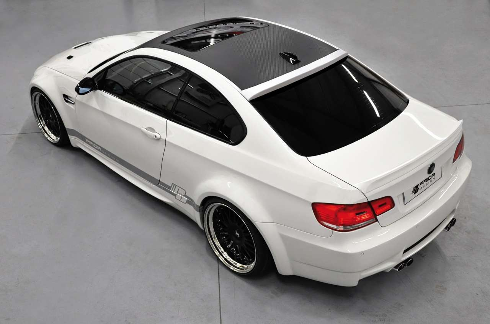

Докладніше про нас
Про Corporation Bmw
- #1: Засновником даного бренду був Карл Фрідріх Рапп, який запатентував торгову марку в 1913 році. З 1917 року компанія почала займатися виробництвом авіаційних двигунів.
- #2: Логотип BMW спочатку представляв собою білий пропелер на тлі неба;
- #3: Девіз BMW «із задоволенням за кермом».
- #4: Компанія почала випускати мотоциклетні двигуни, а потім і мотоцикли. Це сталося внаслідок того, що їй заборонити виробляти авіаційні після Першої світової війни.
- #5: У 1919 році BMW розробила свій перший мотоциклетний двигун, що використовувався у моделі Victoria, яку випускала компанія у місті Нюрнберг.
- #6: 1922 — BMW будує свою сьогоднішню основну будівлю на схід від мюнхенського аеропорту Обервізенфельд (сьогодні це міський Олімпійський Центр).
- #7: У 1923 році BMW випускає перший мотоцикл — R32. Який мав горизонтально-опозитний двигун повітряного охолодження об’ємом 500 см2.
- #8: 1924 році перший міжконтинентальний політ в Персію на літаку, оснащеному двигунами BMW.
- #9: 1926 році гідролітак Rohrbach Ro VII з двигунами BMW VI встановлює п’ять світових рекордів.
- #10: 1927 році було встановлено 87 світових рекордів в авіації. 29 з них — на літаках з двигунами BMW.
